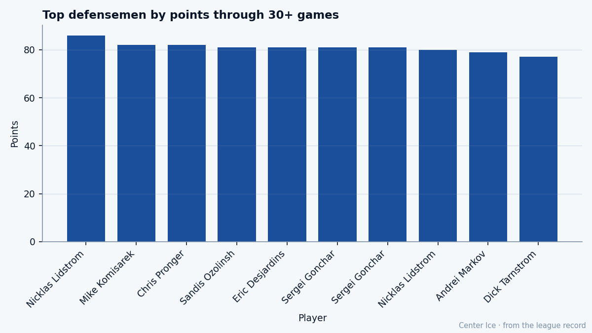

82 Points Last Spring, $1.10M This Winter: Mike Komisarek at 23 and the Decision Montreal Has to Solve by July
The 7th pick of 2001 scored at a Norris pace last season, is up 10 on the Bureau's Index, plays 32.2 minutes a night for a team heading toward the lottery, and his contract ends in the summer.
 Tomáš VránaProfile writer · The Sweater
Tomáš VránaProfile writer · The SweaterMike Komisarek81 put up 82 points as a defenseman in 2003-04. Tied for second among all defensemen. The Norris Memorial Trophy went to  Toronto Maple Leafs.
Toronto Maple Leafs.
He is 23, on $1.10M with zero years left on his deal. The  Montreal Canadiens Canadiens sit 10-12-7 and 37 points through 34 games, 14th in a 30-club league, and the man who came within two points of leading them is the same man who will be a restricted free agent come the summer.
Montreal Canadiens Canadiens sit 10-12-7 and 37 points through 34 games, 14th in a 30-club league, and the man who came within two points of leading them is the same man who will be a restricted free agent come the summer.

The Bureau's Development Index has him up 10 this season, the fourth-biggest riser among defensemen and tied for seventh among all players. Base grade 77. Current overall 81. Potential 92. Those 11 grades are what the Canadiens have to decide whether to pay for.
The body the Book gave him
Komisarek is 6'5, 225, shoots right, and the Bureau grades him at Speed 93 and Shot Power 91. He carries the puck out of his own zone faster than almost anyone at his position, and when he arrives at the blue line, he puts the puck on net from range. His Checking is 87, his Aggression 82. His Agility is 85.
The numbers that look wrong are the ones at the bottom. Fighting 51. Spin Back 52. Faceoffs 54. He does not fight. He does not win draws. The room around him has to absorb that. At 6'5 and 225, with Aggression at 82, you would expect more than 51 in the Fighting column. The Bureau sees a man who uses his size to move pucks, not men.
The PIM tells a different story this season. He took 40 penalty minutes in 82 games last year. Through 34 games this year he has 62. The rate has more than tripled. With 32.2 minutes a night on his plate and a team in front of him that cannot keep the game in its own zone, the physical toll is rising.
West Islip to Montreal
He grew up on Long Island, played youth hockey in the Suffolk PAL program, then two years of varsity at St. Anthony's High School before the New England Jr. Coyotes of the EJHL took him. Coach Gary Dineen ran that program. From there he went to USA Hockey's National Team Development Program, then two seasons at the University of Michigan under Carl Bertagna, though the background sheet names Aleksey Nikiforov as the Lithuanian coach who shaped his game. He was a First Team Division I All-American in 2002.
The Canadiens drafted him 7th overall in 2001. He signed July 24, 2002. His first NHL game came in 2002-03, and he played 24 games as a rookie: 1 goal, 2 assists, 3 points, 6 penalty minutes, 11.8 minutes a night. A call-up filling a roster spot.
The next season, 82 points. From 3 to 82 in a single year. That is the jump the Bureau was trying to capture when it set his potential at 92, and the reason his base of 77 feels low against what he has already done.
What 32.2 minutes a night looks like at 23
Montreal's season is a bad one. The Canadiens are 10-12-7, 14th in the Central Division standings, 28 points out of a playoff spot with roughly 48 games left. They will not make the field. Komisarek is their best player by 4 grades over the next man ( Jose Theodore87 at 87, then
Jose Theodore87 at 87, then  Richard Zednik81 at 81, then
Richard Zednik81 at 81, then  Michael Nylander77 at 77).
Michael Nylander77 at 77).
He plays 32.2 minutes a night. On a team that cannot get out of its own end, that is a young defenseman being fed every matchup, every penalty kill, every power play, every shift where the other team is on a rush and there is no one else to send. His 62 penalty minutes are the cost; his 8 goals and 21 assists are the return.
At his current pace of 29 points in 34 games, he is tracking toward roughly 70 points over a full 82. That would be the third-highest total of his career by a wide margin. The 82-point season was not a fluke. The Index says he is still climbing.
The $1.10M and the July problem
$1.10M is what the Canadiens are paying for a 23-year-old defenseman who scored 82 points last year and is scoring at a 70-point pace this year. The Bureau would call it a steal at the base grade of 77, a robbery at the current 81.
But it expires. Zero years left means that come July, with the Development Index pointing up 10 and the potential sitting at 92, another general manager will put paper in front of him. The question the Canadiens face is whether they can build something around a 7th pick who is producing at Norris level when the rest of the roster gives him nothing.
Theodore is 87 in net. Zednik is 81 at right wing and scoring at a 113-point pace. Beyond those two the room thins fast: Nylander at 77,  Jan Bulis76 at 76,
Jan Bulis76 at 76,  Chad Kilger76 at 76. This is not a lineup that gets its defenseman the puck in the offensive zone or clears the crease when he fires from the point.
Chad Kilger76 at 76. This is not a lineup that gets its defenseman the puck in the offensive zone or clears the crease when he fires from the point.
Komisarek's morale reads 94. No injuries in two seasons. No missed time that the numbers show. Whatever the room says, it says the man is playing because he wants to, not because he is stuck. That changes in July if nobody picks up the phone.
The grade ceiling he already beat
The potential grade the Bureau set for him in the Book is 92. His overall today is 81. His base is 77. There are 11 grades of headroom between where he sits and where they think he can go. For most players, that is a fantasy. For Komisarek, the 82-point season already suggested the ceiling was set too low. A defenseman who puts up 82 points in a single year has done something the 92 ceiling was designed to call unsustainable.
The Bureau says it was unsustainable. The Index says he is climbing again this year. A general manager in Montreal has to decide which one to believe with a contract on his desk.
The season ends roughly 81 days from now. Free agency falls on 2006-07-28. That is 216 days. The Canadiens have 216 days to decide whether the man who scored 82 points as a defenseman for them is a player they can keep at a number that is not $1.10M, or whether he goes somewhere that can surround him with what he needs.
West Islip, Long Island, to 32.2 minutes a night at the Bell Centre in his fourth pro season. The contract is short and the price is going up. The 23-year-old with Speed 93 and Fight 51 and zero years left is the best thing the Canadiens have, and the Bureau's Index says he is not finished.